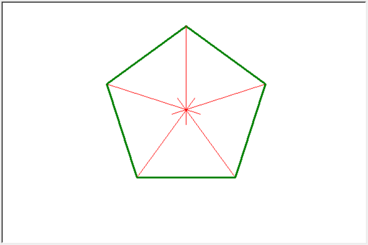

第07讲 绘制正多边形（二)
内容
第07讲 绘制正多边形（二)¶
Lecture07 Draw Regular Polygons（Part 2)
Problem 问题¶
Draw and answer questions 绘图并回答问题
Draw a modified regular hextagon(6 sides) using methods in module turtle. Here are the requirements: 使用turtle模块里的方法按要求绘制一个边长为160的正六边形，并对其做一些特定的修饰。具体要求如下：
Draw area should be 600 pixels for both heigh and width; 绘图区的宽高均为600；
The regular hextagon should be in centered left and right in the draw area; 正六边形应该位于绘图区的水平正中；
Side length of the hextagon is 160 and line color is “green”; 六边形每边长为160，颜色为绿色；
Counterclockwise from the bottom line, the line size for each side is 1, 2, 3, 4, 5, 6, respectively; 从最低边逆时针算起，每条边的尺寸（线宽）分别为1，2，3，4，5，6；
Extend each side 40 pixel as the figure shows; 正六边形的每一条边绘制完后，需如图所示向一侧延伸40；
Answer the following questions: 回答下列问题：
How many degrees did the turle turn during the entire process of drawing the regular hexagon with the code you wrote? 小海龟在用你编写的代码绘制正六边形的整个过程中一共转了多少度？
To complete the drawing of a regular hexagon, what is the smallest number of degree that a turtle needs to turn? 要完成一个正六边形的绘制，小海龟至少需要一共转多少度？
The 6 interior angles of a regular hexagon are all equal. What is it? What is the sum of all the interior angles of a regular hexagon? 正六边形6个内角都相等，这个度数是多少？正六边形的所有内角加起来的和是多少度？
Math Background 数学背景¶
直线或线段可以认为是180度的角；
对于任意一个（正）多边形，其内角和（sum of interior angles）\(A\)可以用下面的公式来计算：
\[A = (n-2)\times 180\]其中，\(n\)为多边形的边数；
正多边形，其外角和（sum of exterior angles）永远是360度。事实上对于任意一个凸（convex)多边形，即使不是正多边形，其外角和也总是360度。
Prerequisites 预备知识¶
[4]:
from random import randint
from turtle import setup, reset, bye, pu, pd, bk, fd, left, right, st, ht
# from turtle import penup, pendown, backward, forward, showturtle, hideturtle
from turtle import pencolor, pensize
setup(600, 400, None, None)
use pensize method to specify line size(width) 使用pensize方法确定线的尺寸（宽度）¶
[59]:
side = 160
ext_side = 40
color1, color2 = "green", "red"
n = 6
degree = 60 # 360 / n
reset()
pu()
right(90)
fd(120)
left(90)
bk(side/2)
pd()
pencolor(color1)
[60]:
i = 0
while i < n:
pensize(5*i+1)
fd(side)
fd(ext_side)
bk(ext_side)
left(degree)
i = i + 1
ht()
[30]:
fd(side)
[34]:
fd(ext_side)
[33]:
bk(ext_side)
[35]:
left(degree)
calculation of dgrees for each turn 每一次转角度数的计算¶
[24]:
from time import sleep
turn_degree = 60
reset()
pencolor("black")
fd(100)
sleep(1)
right(turn_degree)
sleep(0.5)
right(turn_degree)
sleep(0.5)
right(turn_degree)
pencolor("red")
fd(100)
build connection between line size and the side to draw 在要绘制的边和线宽之间建立联系¶
[ ]:
i = 1
pensize(i+1)
Solution 编程求解¶
[1]:
from random import randint
from turtle import setup, reset, bye, pu, pd, bk, fd, left, right, st, ht
# from turtle import penup, pendown, backward, forward, showturtle, hideturtle
from turtle import pencolor, pensize
setup(600, 400, None, None)
[2]:
reset() # 重置海龟位于中心，朝向正右方
pu() # 抬起画笔
side_length = 160 # 设定边长
ext_length = 40 # 设定额外伸出的长度
right(90) # 右转海龟（朝向正下方）
fd(130) # 前进130像素
left(90) # 左转海龟（朝向正右方）
bk(side_length/2) # 后退边长的一半（向左）
pd() # 放下画笔准备画图
edge_drawn, edge_total = 0, 6 # 设定已经绘制完成的边的数量和总的边的数量
degree = 360 / edge_total # 设定每一次要转的角度
pencolor("green") # 设定画笔的颜色
line_width = 1 # 设定画线的宽度
while edge_drawn < edge_total: # 根据条件判断是否进入循环
line_width = edge_drawn + 1 # 设定当前应该使用的线宽
pensize(line_width) # 选用当前的线宽来绘图
fd(side_length + ext_length) # 前进边长加额外长度
bk(ext_length) # 后退额外长度
left(degree) # 左转海龟degree表示的度数
edge_drawn += 1 # 更新已经完成绘制的变数，表示已经完成一条边和额外线段的绘制
ht() # 当离开循环时隐藏海龟
Answer the following questions: 回答下列问题：
How many degrees did the turle turn during the entire process of drawing the regular hexagon with the code you wrote? 小海龟在用你编写的代码绘制正六边形的整个过程中一共转了多少度？ 答:360度
To complete the drawing of a regular hexagon, what is the smallest number of degree that a turtle needs to turn? 要完成一个正六边形的绘制，小海龟至少需要一共转多少度？ 答:5个60度，即300度，最后一次转角不是绘制正六边形所必需的。
The 6 interior angles of a regular hexagon are all equal. What is it? What is the sum of all the interior angles of a regular hexagon? 正六边形6个内角都相等，这个度数是多少？正六边形的所有内角加起来的和是多少度？ 答:正六边形的每一个内角度数是60度，一共有6个这样的内角，内角和是360度。
Summary 知识点小结¶
pensize方法用于确定绘画线条的宽度参与控制循环条件的变量可以在循环体内发挥其它重要的作用
CS Tips 计算机小知识¶
在通过计算机技术绘制斜线的时候，有时候线段并不是很平滑，显现出一些类似毛刺或锯子的齿一样的形态，我们称这样的线条有“锯齿”。锯齿的形成与计算机绘图硬件有关。可以通过提高显示设备的分辨率和其它一些技术来减轻锯齿发生的程度。
Assignments 作业¶
[ ]:
from random import randint
from turtle import setup, reset, bye, pu, pd, bk, fd, left, right, st, ht
# from turtle import penup, pendown, backward, forward, showturtle, hideturtle
from turtle import pencolor, pensize
setup(600, 400, None, None)
Use skills you learned so far, draw a regular octagon like the following figure shows. 使用已经教学过的知识，绘制如下图类似的正八边形。Detailed requirements are 具体要求如下：
side length is 120, centered left and right middle, line size is 3, line color is green 它边为120，左右居中位于绘图区，每条边的线宽总是3，颜色是绿色
the lowest part of the octagon is a vertex instead of an edge 它最下方不是一条边而是一个顶点
from each vertex of the octangon, there is a red line (size is 1) pointing to its center with the same length as the octagon itself 正八边形每一个顶点都朝向中心延伸出一条线宽为1颜色为红色的长度与八边形边长相等的线段
comment each line of your code 给每一行代码添加注释

[ ]:
Use skills you learned so far, draw a regular hexagon like the following figure shows.使用已经教学过的知识，编程绘制出下图所示的图形。Detailed requirements are 具体要求如下：
side length is 120, centered left and right middle, line size is 3, line color is green 它边长为120，仍然在绘图区左右居中，每条边的线宽总是3，颜色是绿色；
the lowest part of the octagon is a vertex instead of an edge 它最下方不是一条边而是一个顶点
the 3 furthest pairs of vertices in the regular hexagon are connected by red lines of width 1 正六边形中距离最远的3对顶点是用颜色为红色的宽为1的线条连接起来的
comment each line of your code 给每一行代码添加注释

[ ]:
Use skills you learned so far, draw a regular pentagon like the following figure shows 使用已经教学过的知识，编程绘制出下图所示的图形。Detailed requirements are 具体要求如下：
side length is 120, centered left and right middle, line size is 3, line color is green 它边为120，仍然在绘图区左右居中，每条边的线宽总是3，颜色是绿色；
its top is a vertex of a regular pentagon, and the distance from this vertex to the center of the drawing area (the starting position of the turtle) is equal to the side length of the regular pentagon 它最上方是正五边形的一个顶点，且这个顶点距离绘图区中心（海龟一开始的位置）的距离等于正五边形的边长；
each vertex extends toward the center with a line with a width of 1 and a color of red with a length equal to the length of the side.每一个顶点都朝向中心延伸出一条线宽为1颜色为红色的长度与边长相等的线段
comment each line of your code 给每一行代码添加注释

Observe 7 regular polygons including regular triangle, square, regular pentagon, regular hexagon, regular octagon, regular nonagon, and regular decagon, answer the following questions: 观察正三、正四、正五、正六、正八、正九、正十边形等7个正多边形，回答下列问题：
when drawing each regular polygon, how many degrees does the little turtle turn after each edge is drawn? 在绘制每一个正多边形时，小海龟在绘制完成一条边后要转多少度？
for each regular polygon, how many interior angle does it have, What is the sum of these interior angles? 对于每一个正多边形，它有多少个度数相同的内角？这些内角加起来的和是多少？
for each regular polygon, how many exterior angles does it have? What is the sum of these exterior angles?对于每一个正多边形，它有多少个度数相同的外角？这些外角加起来的和是多少？，
is it true that the more sides of a regular polygon, the greater the sum of the interior and exterior angles?是不是正多边形的边数越多，内、外角和就越大？
Fill in the answers in the two cells below, where the answer for regular triangle has been given as an example 将答案填写在下面的两个单元格中，其中三角形作为示例答案已经给出
[ ]:
# number degree for number of number of sum of degree of sum of degree of
# of edges each turn inner angle outer angle inner angles inner angles
# 正多边形边数 绘图时每次转的度数 内角个数 外角个数 内角和（度） 外角和（度）
# 3 120 3 3 180 360
# 4
# 5
# 6
# 8
# 9
# 10
[ ]:
# 是不是正多边形的边数越多，内、外角和就越大？
#
(Hard Optional; 困难，选做， /25）Use skills you learned so far, draw the following figure 使用已经教学过的知识，编程绘制下图所示的图形。Detailed requirements are 具体要求如下：
this is a shape composed of 20 end-to-end line segments, counting from left to right with 10 vertical line segments; counting from top to bottom with 10 horizontal line segments; 这是由20条首尾连接的线段组成的一个图案，自左向右数一个有10条垂直方向的线段；自上向下数有10条水平方向的线段；
Start drawing from the center of the screen, the length of the initial horizontal line segment and the vertical line segment drawn after turning 90 degrees to the left are both 20; 从屏幕正中央开始绘图，最初的水平线段和随后左转90度后绘制的垂直线段长度均为20；
The two line segments drawn each time (respectively a horizontal and a vertical line segment drawn after turning 90 degrees to the left) are equal in length and 20 longer than the previous two line segments; 每次绘制的两条线段（分别为一条水平和左转90度后绘制的一条垂直线段）长度相等且比之前的两条线段长20；
Repeat this until 20 line segments are drawnRepeat this until 20 line segments are drawn; 如此重复直至绘制完成20条线段；
[62]:
(Hard Optional; 困难，选做, /(25+10))使用
while循环绘制下图。要求：all the three squares are absolutely located in the middle of the draw area whose size is 600*400; 所有的三个正方形都完全位于尺寸为600×400的绘图区域的中心
the side lengths of the three squares are: 250, 150, and 50, respectively; 三个正方形的边长依次为250，150，和50;
line size for each square is 1, 2, and 3 from inside to outside; 三个正方形从内到外线宽依次为1，2，和3;
you can use either one
whileloop or two wrappedwhileloops; 可以只使用一个while循环来实现，也可以使用两个while循环嵌套来实现；if you use two
whileloops and the all codes are controlled within 35 lines (the line where the import, setup is located is not included in the total lines), you can get an extra 10 points if the result is correct; 如果你使用了两个while循环并且代码总行数控制在35行以内（import, setup所在的行不计入总行数），结果正确可以获得额外的10分加分;

[ ]: